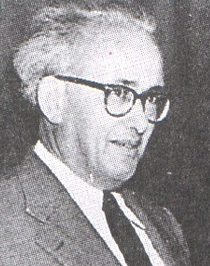

Tevfik Ýleri (1911-1961)

Devlet ve siyaset adamý. Yaklaþýk on yýl milletvekilliði ve bakanlýk gibi önemli makamlarda bulundu. 27 Mayýs ihtilalinden sonra, haksýz ithamlar karþýsýnda Yassýada'da örnek bir savunma örneði sergiledi. Zulme boyun eðmedi. Bakanlýðý boyunca vataný ve milleti için elinden geleni yapmaya çalýþtý. Risale-i Nur'da "Ýslamiyet'in kahramaný" (Emirdað Lahikasý, s. 449) olarak iltifatta bulunulmaktadýr.Tevfik Ýleri, 1911 yýlýnda Rize'nin Hemþin kasabasýnda doðdu. Hafýz Celal Efendi ve Fatma Hanýmýn evladý olarak dünyaya gözlerini açtý. Ýlk ve orta öðrenimini Ýstanbul'da dedesinin yanýnda yaptý. Gelenbevi Ortaokulunu bitirdikten sonra Ýstanbul Teknik Üniversitesine girdi. Talebeliðinin son senesinde Milli Türk Talebe Birliðinin baþkanlýðýna seçildi. 1933 yýlýnda mezun oldu.
Talebelik yýllarýndan itibaren hareketli bir hayat süren Ýleri, çeþitli faaliyetlerde bulundu. Bulgar gençleri tarafýndan Razgrad Türk mezarlýðýnýn tahribinin protestosu, Türkçe'nin daha yaygýn bir þekilde kullanýlmasý, yerli malýna gerekli önemin verilmesi gibi gayelerle miting ve gösterilerin yapýlmasýna öncülük etti.
Mezuniyetten sonra yurdun muhtelif yerlerinde hizmette bulundu. Erzurum'da karayollarý kontrol mühendisi olarak çalýþtý (1933-37), Çanakkale (1937-42) ve Samsun'da (1942-50) bayýndýrlýk müdürlüklerinde bulundu. 1950 seçimlerinde Demokrat Parti Samsun milletvekili olarak Meclise girdi.
Ýleri, vekilliðin hemen akabinde ve uzun süre bakanlýk yapan ender kiþilerdendir. Meclisin aktif bir üyesi olarak çalýþtý. Ýlk DP hükümetinde Ulaþtýrma Bakaný olarak yer aldý. Kýsa bir süre sonra Milli Eðitim Bakanlýðýna getirildi (1950-53). Bunlarýn dýþýnda Meclis Baþkan Vekilliði (1953-55), ikinci kez Milli Eðitim Bakanlýðý (1957), Devlet Bakanlýðý ve Baþbakan Yardýmcýlýðý (1957-58), Bayýndýrlýk Bakanlýðý ve Milli Eðitim Bakan Vekilliði (1958-60) gibi görevlerde bulundu.
Bakanlýklarý boyunca çok önemli çalýþmalarda bulundu. Din derslerini ilkokullarýn müfredatýna dahil etti. Din derslerinin okutulup okutulmamasý velilerin seçimine býrakýldý. Bu dersin çocuklarýna verilip verilmemesine veliler karar verecekti. Yirmi yýl sonra Ýmam-Hatiplerin açýlmasýna öncülük etti. Ýstanbul'da Yüksek Ýslam Enstitüsünün kurulmasýný saðladý. Köy Enstitülerini yeniden düzenleyerek buradaki köy çocuðu-þehir çocuðu ayýrýmýný ortadan kaldýrmak maksadýyla öðretmen okullarýyla birleþtirdi.
27 Mayýs 1960 yýlýnda yapýlan darbenin ardýndan diðer arkadaþlarý gibi Ýleri de Yassýada Mahkemesinde yargýlandý. Haksýz ve desteksiz ithamlara karþý susmadý ancak, susturuldu. Vatan Cephesi kurmak, muhalefetin faaliyetlerine engel olup diktatörlük tesisinde bulunmak, Meclisin çalýþmalarýný engellemek, Anayasayý ihlal etmek gibi suçlarla itham edildi. En tabii hakký olan savunmasýný yapmasýna bile tahammül edilmedi ve duruþmanýn birinde, salon dýþýna çýkarýldý. Savunmasýný, "Ölüm belki de kurtuluþtur. Memleketin huzuru benim ölümüme ve hapishanelerde çürümeme baðlýysa kararýnýzý böyle verin. Memleketimin hayrý için buna da razýyým." sözleriyle bitirdi. Ömür boyu hapis cezasýyla Kayseri bölge cezaevine yollandý. Burada hastalanmasý üzerine Ankara Hastanesine kaldýrýldý. 31 Aralýk 1961 yýlýnda vefat etti.
Ýleri, Demokrat Parti idealine samimi bir þekilde baðlý olmakla beraber fikirlerini açýklamaktan çekinmedi. Gerektiðinde çetin tartýþmalara girdi. Kimseyi kýrmadan doðru bildiklerini beyan etti. Asýl büyük kiþiliðini felaket günlerinde ortaya koydu. Mahkemede dimdik ayaktaydý. Samet Aðaoðlu, "... dimdik, baþ eðmeden ayakta durmuþ karakter sütunlarý arasýnda daha da yükselen birkaç abideden biridir. Açýn Yassýada Ýhtilal Mahkemesinin zabýtlarýný, o yapraklar arasýnda Ýleri'nin baþý bir arslana benzer, sesi bir arslan kükreyiþine. Bu kükreyiþ Vatan Cephesi davasýnda öylesine yükselmiþtir ki, savunmasýný keserek duruþma salonundan çýkarmýþlardý" sözleriyle onu tanýmlamaktadýr. (Cahide (Ýleri) Aksoy, Babam Tevfik Ýleri, I. C., Ankara 1977, s. 431.)
Ýktidarlar, hükümetler, bakanlar deðiþir ama, dalkavuklarla kendi menfaatini temin etmek için baþkalarýný karalayanlar pek deðiþmez. Ýleri, Komünistliðin ahlaksýzlýk ve sefaletle beraber yürüdüðüne inanýyordu. Ancak, kimsenin haksýz yere töhmet altýnda kalmasýný istemiyordu. Yeni Milli Eðitim Bakaný Ýleri'ye; okul açýlmadan komünist fikirli hocalarýn hemen görevlerinden atýlmalarý tavsiye edilir. Buna karþýlýk Bakan, konunun hassasiyetine binaen çok dikkatli çalýþýlmasý, iyice tetkik edilmesi, haksýz yere hiçbir hocanýn itham edilmemesi gerektiði cevabýný verir. Yine, parti toplantýlarýndan birinde Trabzon ve Samsun'da bölge müdürlüklerinde bulunmuþ birisinin CHP'li olmakla suçlanmasý üzerine Ýleri: "Beyefendi, þimdi aleyhinde konuþtuðunuz zat benim mühendislik okulundan arkadaþým ve karakterini, ahlakýný çok iyi tanýdýðým mert ve bilgili bir insandýr. CHP'ye mensup olabilir. Fakat, resmi hizmet ve vazifesinde taraf tutmaz. Doðruluktan þaþmaz, deðerli bir vatan evladýdýr. Rica ederim, bir daha benim yanýmda onun aleyhinde konuþmanýzý istemem" demek suretiyle partiliye kýzgýnlýðýný belirtmiþtir.
Ýleri'nin, mütedeyyin bir kiþiydi. Batýl inanç ve itikatlara karþý olduðu gibi, dindar insanlara karþý olan samimiyetini ve alakasýný hiçbir zaman esirgemedi. Ýnsanlarýn en temel hakký olan inancýný öðrenme ve yaþamasýna hep saygýlý olunmasý gerektiðini savundu. Özellikle Ýslamiyet'e yönelik haksýz eleþtirilere karþý çýktý. Din ve vicdan özgürlüðü anayasa ile teminat altýna alýnýrken, fiiliyatta dini özgürlüklerin kýsýtlanmasý þeklindeki tezatlara dikkat çekti.
20 Kasým 1959 yýlýnda Yüksek Ýslam Enstitüsü'nün açýlýþ töreninde yaptýðý konuþmada dinin ilerlemeye engel teþkil ettiðini iddia edenlere cevap verdi. Bu iddianýn milli tarihimizle çürütüldüðünü, çok medeni olduðu halde çok dindar milletlere en güzel örneðin kendi toplumumuz olduðunu belirtti. Müslüman toplumlarýn geri kalmýþlýðý konusunda da en mütekamil din olan Ýslamiyet'in hiçbir kusurunun olmadýðýný belirtti. Ona göre, Ýslamiyet'i medeniyete zýt göstermek en büyük haksýzlýktý.
CHP iktidarý boyunca gerek Bediüzzaman gerekse talebeleri büyük baský ve tazyik altýnda tutuldular. Dine hürmetkar Demokratlar, nispeten da olsa bu sýkýntýnýn hafiflemesine gayret gösterdiler. Bu gayreti gösterenlerden birisi de Tevfik Ýleri'dir. Bediüzzaman, kendisi için "Ýslamiyet'in kahramaný" ifadesini kullanmýþtýr. Ýleri, Bediüzzaman'ýn Doðuda üniversite kurma düþüncesini büyük bir memnuniyetle karþýladý. Bediüzzaman da ona "Tevfik Ýleri'nin bu biçare Said'e bedel Risale-i Nur'a himayetkârâne sahip çýkmasýný rahmet-i Ýlâhîden niyaz ediyorum" (Emirdað Lahikasý, s. 403), þeklinde duada bulundu. Bediüzzaman, Baþbakan ve Ýleri'nin Risale-i Nurlar üzerindeki baskýlarýn kaldýrýlmasý ve neþredilmeleri konusunda yardýmcý olacaklarýný, talebelerine muhtelif zamanlarda haber vermiþtir.
Demokrat Parti Muþ Milletvekili olan Gýyaseddin Emre, Tevfik Ýleri için, "Müslüman, mütedeyyin bir zat" ifadesini kullanmaktadýr. (Son Þahitler, III. C., s. 278-279.) Bayram Yüksel, Ýstanbul Üniversitesi profesörlerinden birinin, -Anadolu'daki Nurcularý kastederek- din lehinde kuvvetli bir cereyanýn olduðunu ve onlara da solcular gibi meydan vermeyeceklerini söylemesi üzerine Milli Eðitim Bakaný Ýleri'nin, "Eðer dediðin o cereyan Nurcular ise, ne siz, ne de Avrupa onu maðlup edemez" karþýlýðýný verdiðini bildirmektedir. (Son Þahitler, III. C., s. 66.)
Ýnsanlarýn imanlarýný kurtarmaya vesile olmaktan baþka hiçbir gayeleri olmayan Bediüzzaman ve talebelerine karþý yapýlan haksýz muameleyi ortadan kaldýrmak ve tabii haklarýný kullanmalarýna yardýmcý olmak, Yassýada Mahkemelerinde Demokratlarýn karþýsýna "Anayasa ihlali" suçu olarak çýkarýldý. Tevfik Ýleri'nin, Anayasayý ihlal ettiði iddiasýna delil olarak Bediüzzaman'ýn, "Ankara'ya bu defa geldiðimin mühim bir sebebi, Ýslamiyet'e ciddi taraftar Dahiliye Vekili Namýk Gedik'i görmek ve Ýslamiyet'in kahramaný olan Adnan Beye ve Tevfik Ýleri gibi mühim zatlara..." þeklinde devam eden mektubu gösterildi. (Cahide (Ýleri) Aksoy, Babam Tevfik Ýleri, I. C., Ankara 1977, s. 392-393.)